Wiederkehrende Aufgaben bearbeiten
Handling-Repetitive-Tasks
Origin automatisieren Stapelverarbeitung
Analyseberichtsblätter
- 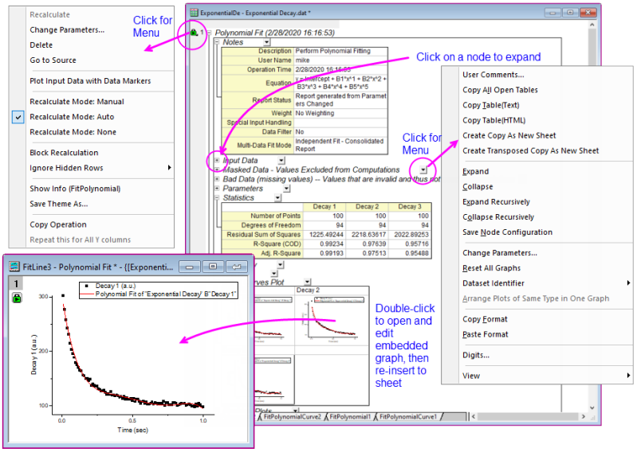
Analyseoperationen wie jene, die mit den Kapiteln Analyse oder Statistik aufgeführten Hilfsmitteln durchgeführt werden, erstellen ausführliche Analyseberichtsblätter.
- Analyseberichtsblätter enthalten Tabellen, die in einer Baumstruktur angeordnet sind.
- Erweitern oder minimieren Sie jeden Zweig, um die Tabellen anzuzeigen bzw. zu verbergen.
- Tabellen sind keine statischen Berichte. Sie werden mit Hilfe von Platzhaltern erzeugt, die mit bestimmten Analyseergebnissen verknüpft sind. Daher können Ergebnisse bei Änderungen der Eingabe- bzw. Analyseparameter neu berechnet werden.
- Sie können Kommentare zum Blatt hinzufügen oder Tabellen kopieren und sie in andere Fenster Ihres Projekts einfügen bzw. einfügen-verknüpfen.
- Analyseberichtsblätter enthalten häufig eingebettete Diagramme wie Anpassungskurven oder Residuendiagramme. Um diese Diagramme benutzerdefiniert anzupassen, klicken Sie doppelt auf sie. Das eingebettete Diagramm wird in einem separaten Fenster geöffnet, in dem Sie es -- wie jedes Origin-Diagramm -- mit Hilfe der Minisymbolleisten oder dem Dialog Details Zeichnung benutzerdefiniert anpassen können. Wenn Sie mit der Anpassung fertig sind, klicken Sie auf die Schaltfläche Schließen
 und fügen Sie das angepasste Diagramm erneut in das Berichtsblatt ein.
und fügen Sie das angepasste Diagramm erneut in das Berichtsblatt ein.
Weitere Informationen zu Analyseberichtsblättern finden Sie in der Origin-Hilfe.
Neuberechnung
Neuberechnung der Ergebnisse Alle Analyse- und die meisten Datenverarbeitungsdialoge in Origin verfügen über das Bedienelement Neu berechnen Neu berechnen. Dieses Element ermöglicht Ihnen, Ausgabeoperationen mit den Quelldaten zu verbinden. Wenn Neu berechnen auf Auto oder Manuell gesetzt ist, lösen Änderungen an den Quelldaten eine Aktualisierung der Ausgabe aus (im Fall von Manuell geschieht dies ausstehend). Auf diese Weise können Sie mehrere Datensätze analysieren, z.B. durch den Serienimport einer neuen Datendatei, um vorhandene Daten zu ersetzen. Diese Funktion stellt auch die Grundlage zur Erstellung von Analysevorlagen dar. Das Konzept der Analysevorlagen wird unten erläutert. Automatisch neu berechnen Manuell neu berechnen Schloss, Neu berechnen
- 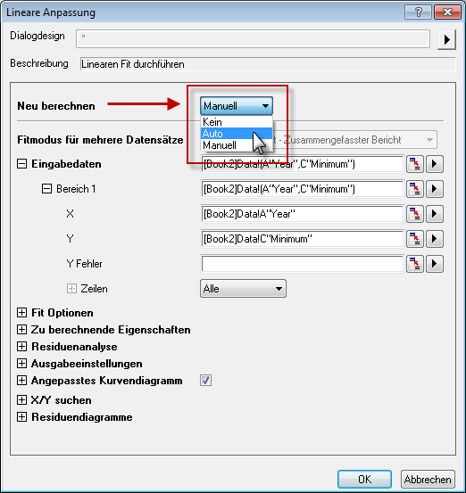
Die Funktion Neu berechnen hat drei Modi:
| Kein |
- Es wird kein Schloss in der Ausgabe angezeigt.
- Änderungen an den Eingabedaten führen zu keiner Aktualisierung der Ausgabe.
|
| Auto |
- In den Ausgabespalten und Diagrammen der Ausgabedaten wird ein automatisches grünes Schloss
 angezeigt. Das Schloss der Hauptoperation wird auf der Spalte ganz links als angezeigt, während alle verbundenen Operationsspalten rechts von der Hauptoperation das Symbol "+" aufweisen. angezeigt. Das Schloss der Hauptoperation wird auf der Spalte ganz links als angezeigt, während alle verbundenen Operationsspalten rechts von der Hauptoperation das Symbol "+" aufweisen.
- Die Ausgabe wird automatisch aktualisiert, wenn Eingabedaten geändert werden.
- Sie können auch auf ein Schlosssymbol klicken und den Dialog öffnen, um Änderungen an den Analyseeinstellungen vorzunehmen, einschließlich Ändern des Modus Neu berechnen.
|
| Manuell |
- In den aktuellen Ausgabespalten und Diagrammen, die Zeichnungen der Ausgabedaten enthalten, wird ein manuelles grünes Schloss angezeigt. Die verbundenen Operationsspalten rechts von der Hauptoperation zeigt das Symbol "+" an.
- Ein gelbes Schloss
 weist darauf hin, dass Eingabedaten geändert wurden und eine Neuberechnung aussteht. Sie können Aktualisierungen individuell durch Klicken auf das gelbe Schloss und Auswählen der Option Neu berechnen im Kontextmenü starten; oder Sie können alle ausstehenden Operationen durch Klicken auf die gelbe Schaltfläche Neu berechnen weist darauf hin, dass Eingabedaten geändert wurden und eine Neuberechnung aussteht. Sie können Aktualisierungen individuell durch Klicken auf das gelbe Schloss und Auswählen der Option Neu berechnen im Kontextmenü starten; oder Sie können alle ausstehenden Operationen durch Klicken auf die gelbe Schaltfläche Neu berechnen  auf der Standardsymbolleiste aktualisieren. auf der Standardsymbolleiste aktualisieren.
- Sie können auch auf ein Schlosssymbol klicken und den Dialog öffnen, um Änderungen an den Analyseeinstellungen vorzunehmen, einschließlich Ändern des Modus Neu berechnen.
|
Tipps zum Verwalten der Neuberechnungsoperationen
- Wenn Sie mit der linken Maustaste auf das Schloss klicken, wird ein Menü mit mehreren Optionen angezeigt, einschließlich Ändern der Analyseparameter, Öffnen des Quelldatenblatts, Wechseln zu den Ergebnisblättern und Steuern des Operationsstatus' wie dem Wechsel von manueller zu automatischer Aktualisierung.
- Die Standardsymbolleiste zeigt eine Schaltfläche Neu berechnen an, die grün
 ist, wenn alle Projektoperationen aktuell sind, und gelb , wenn es ausstehende Neuberechnungsoperationen gibt. Wenn Sie ein Projekt geöffnet haben und sehen, dass die Schaltfläche Neu berechnen gelb ist, wissen Sie, dass Berechnungen ausstehen und die Daten und Datenzeichnungen, die Sie sehen, womöglich nicht aktuell sind.
ist, wenn alle Projektoperationen aktuell sind, und gelb , wenn es ausstehende Neuberechnungsoperationen gibt. Wenn Sie ein Projekt geöffnet haben und sehen, dass die Schaltfläche Neu berechnen gelb ist, wissen Sie, dass Berechnungen ausstehen und die Daten und Datenzeichnungen, die Sie sehen, womöglich nicht aktuell sind.
- Wenn ein Schlosssymbol dunkelgrau mit der Farbe
 angezeigt wird, ist das ein Hinweis darauf, dass die zugehörige Operation in OriginPro in durchgeführt wurde und das Fenster oder Projekt in der Standardversion von Origin geöffnet wurde. Die Operation wird von der Standardversion von Origin nicht unterstützt. Um die Analyse zu modifizieren oder erneut durchzuführen, benötigen Sie einen Computer mit einer OriginPro-Lizenz.
angezeigt wird, ist das ein Hinweis darauf, dass die zugehörige Operation in OriginPro in durchgeführt wurde und das Fenster oder Projekt in der Standardversion von Origin geöffnet wurde. Die Operation wird von der Standardversion von Origin nicht unterstützt. Um die Analyse zu modifizieren oder erneut durchzuführen, benötigen Sie einen Computer mit einer OriginPro-Lizenz.
- Wenn ein Schlosssymbol rot
 angezeigt wird, ist etwas aufgetreten, dass Neuberechnungen unmöglich macht. Diese Zustände treten selten auf, tun dies aber, wenn Sie beispielsweise eine Projektdatei, die eine benutzerdefinierte Kurvenanpassungsoperation enthält, an einen Kollegen weitergeben, dabei aber vergessen, Ihre benutzerdefinierte Anpassungsfunktion mitzugeben.
angezeigt wird, ist etwas aufgetreten, dass Neuberechnungen unmöglich macht. Diese Zustände treten selten auf, tun dies aber, wenn Sie beispielsweise eine Projektdatei, die eine benutzerdefinierte Kurvenanpassungsoperation enthält, an einen Kollegen weitergeben, dabei aber vergessen, Ihre benutzerdefinierte Anpassungsfunktion mitzugeben.
- Gibt es viele Neuberechnungsoperationen in Ihrer Projektdatei, kann Ihre Arbeit verlangsamt werden. Sie können die Neuberechnung sperren -- sowohl die manuelle als auch die automatische Neuberechnung --, indem Sie auf ein Schlosssymbol klicken und die Option Neuberechnung sperren im Ausklappmenü wählen. Das Verwenden einer Sperre für ausstehende Neuberechnungen platziert ein gelbes "Sperrsymbol"
 auf jeder zugehörigen Operation in der Kette. Das Verwenden einer Sperre für aktuelle Neuberechnungen platziert ein grünes "Sperrsymbol"
auf jeder zugehörigen Operation in der Kette. Das Verwenden einer Sperre für aktuelle Neuberechnungen platziert ein grünes "Sperrsymbol"  auf jeder zugehörigen Operation in der Kette. Um die Sperre zu entfernen, klicken Sie auf das "Sperrsymbol" und deaktivieren Sie das Kontrollkästchen. (Beachten Sie, dass das Klicken auf die gelbe Schaltfläche Neu berechnen auf der Standardsymbolleiste die gesperrten Operationen nicht aktualisiert.)
auf jeder zugehörigen Operation in der Kette. Um die Sperre zu entfernen, klicken Sie auf das "Sperrsymbol" und deaktivieren Sie das Kontrollkästchen. (Beachten Sie, dass das Klicken auf die gelbe Schaltfläche Neu berechnen auf der Standardsymbolleiste die gesperrten Operationen nicht aktualisiert.)
- Um alle Neuberechnungen auszusetzen, drücken Sie Strg + 0, wählen Sie Analyse: Automatische Neuberechnung pausieren (nur Arbeitsblatt) oder klicken Sie auf die Schaltfläche Automatische Neuberechnung pausieren
 auf der Standardsymbolleiste.
auf der Standardsymbolleiste.
- Sie können die Schlosssymbole in Ihrem Diagrammfenster verbergen, indem Sie das Diagramm klicken, Ansicht: Zeige im Hauptmenü wählen und das Kontrollkästchen Schlosssymbole deaktivieren. Dies entfernt nicht die verbundenen Operationen aus dem Diagrammfenster. Um die Symbole wieder anzuzeigen, wiederholen Sie den Vorgang.
Dialogdesigns
Dialogdesigns Designs, Dialog Die Einstellungen in Analysedialogen und die meisten anderen Dialoge zur Datenverarbeitung können als Dialogdesigndatei gespeichert werden. Sobald sie gespeichert werden, können diese Designdateien, die Ihre benutzerdefinierten Einstellungen enthalten, bei Bedarf wieder aufgerufen werden. Mehrere Designdateien können von einem Dialog aus gespeichert werden und ermöglichen die einfache Wiederholung einer Analyse von Datensätzen, die möglicherweise alle unterschiedliche Einstellungen erfordern.
Die zuletzt verwendeten Dialogeinstellungen werden automatisch als <zuletzt verwendetes> Design gespeichert. Mit Origin können Sie Ihre benutzerdefinierten Einstellungen als <Standard>-Design speichern. Auf das Standarddesign, das zuletzt verwendete Design und alle Designs, die Sie unter einem Namen gespeichert haben, können Sie über das Ausklappmenü Design zugreifen, das sich vom Dialog aus öffnen lässt. Die gleichen Designs sind auch über den Befehl im Hauptmenü verfügbar, der mit dem Analysedialog verbunden ist.
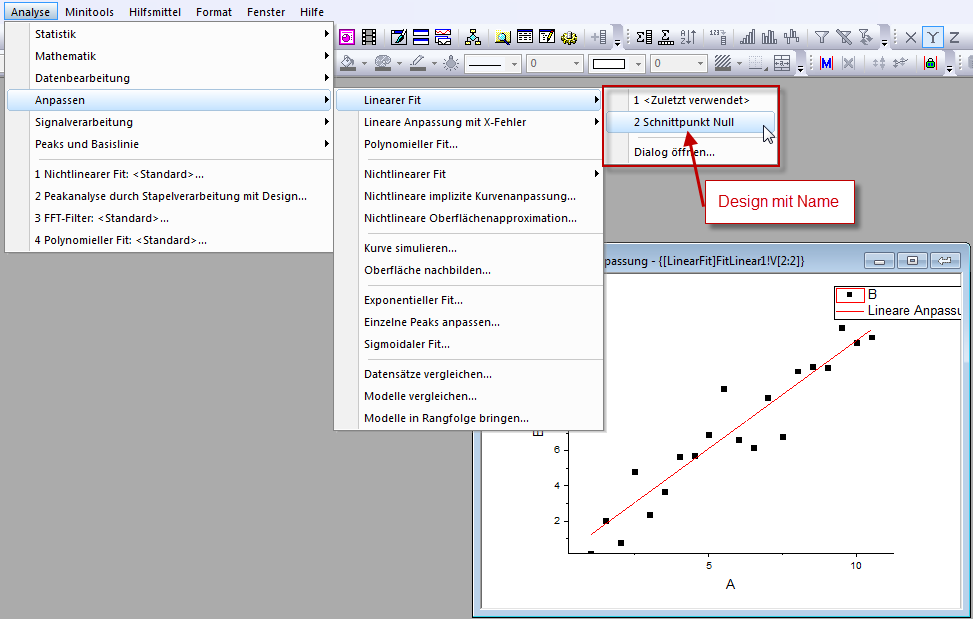
Dialogdesigns können mit Hilfe des Hilfsmittels Designs verwalten organisiert werden, das über das Menü Hilfsmittel verfügbar ist.
 |
Tutorial: Ein Dialogdesign speichern und erneut verwenden
- Importieren Sie die Datei Linear Fit.dat aus dem Ordner \Samples\Curve Fitting\.
- Markieren Sie Spalte B und wählen Sie Analyse: Anpassen: Linearer Fit...
- Aktivieren Sie im Dialog Lineare Anpassung das Kontrollkästchen Fester Schnittpunkt mit der Y-Achse (unter Fit-Optionen) und setzen Sie das Bearbeitungsfeld Fester Schnittpunkt mit der Y-Achse bei auf 0.
- Klicken Sie auf die Schaltfläche 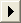 neben Dialogdesign und wählen Sie Speichern unter. Geben Sie in dem Feld Designname den Namen Schnittpunkt Null ein und klicken Sie auf OK. Klicken Sie erneut auf OK, um den Dialog Lineare Anpassung zu schließen und die Analyse durchzuführen. Die Ergebnisblätter FitLinear1 und FitLinearCurve1 werden zu der Arbeitsmappe hinzugefügt.
- Wechseln Sie zurück zu den Quelldaten und markieren Sie Spalte C. Wählen Sie Analyse: Anpassen: Linearer Fit im Menü. Ein Ausklappmenü mit mehreren Designoptionen wird angezeigt, einschließlich dem Design Schnittpunkt Null, das Sie im vorherigen Schritt gespeichert haben.
- Wählen Sie Ihr gespeichertes Design aus. Die Analyse wird automatisch für Spalte C durchgeführt, wobei die im Design gespeicherten Einstellungen verwendet werden. Beachten Sie, dass der Dialog nicht geöffnet wird.
|
 | Tipps zum Arbeiten mit Designs:
- Wenn Sie die Shift-Taste gedrückt halten, während Sie Ihr Design im Hauptmenü auswählen, wird der verbundene Dialog aufgerufen. Hierbei werden die Einstellungen des gewählten Designs in den Dialog geladen.
- Das Standarddesign, das mit Origin für eine Analyse ausgeliefert wird, wird als Systemstandard bezeichnet. Klicken Sie auf das Aufklappmenü im Analysedialog und wählen Sie Systemstandard, um es zu laden.
- Klicken Sie auf das Aufklappmenü im Analysedialog und wählen Sie Löschen, um Designs, die Sie erstellt haben, zu löschen, einschließlich das benutzerdefinierte <Standard>design.
- Die benutzerdefinierten <Standard>designs für alle Analysedialoge werden in der Datei Defaults.xml im Anwenderdateiordner gespeichert. Wenn diese Datei gelöscht wird, werden die Standardeinstellungen des Systems aller Analysedialoge wieder hergestellt.
|
Arbeitsmappen- und Projektvorlagen
Vorlagen, Arbeitsmappe Vorlagen, Projekt Es gibt eine Anzahl von Gründen zum Speichern einer einzelnen Arbeitsmappe oder einem ganzen Projekt als "Vorlagen"datei. Hier sind einige typische Szenarien.
- Sie importieren vielleicht Datendateien, die immer eine feste Anzahl Spalten mit einem sich wiederholenden Muster der Spaltenzuordnungen (z. B. XYyError, XYyError etc.) haben, also erstellen Sie eine benutzerdefinierte Arbeitsmappe nur für den Import dieser Dateien (Datei: Vorlage speichern unter).
- Sie importieren regelmäßig Datendateien von ähnlicher Struktur, führen einige Routineoperationen der grafischen Darstellung und Analyse mit den Daten durch und erzeugen dann einen Bericht mit Hilfe eines Notizfensters, das in einem Arbeitsblatt oder einer Arbeitsmappe eingebettet ist. Dies wäre ein typisches Beispiel einer Analysevorlage (Datei: Arbeitsmappe als Analysevorlage speichern).
- Sie führen einige Operationen durch ähnlich denen, die im vorherigen Beispiel beschrieben wurden, aber Sie können Ihre Arbeitsmappe nicht als Analysevorlage speichern, weil alle Daten beim Speichern aus der Arbeitsmappe gelöscht werden, wodurch das Blatt mit den Referenzwerten, die Sie für Ihre Analyse brauchen, zerstört würde. Stattdessen könnten Sie nur die importierten Daten löschen und Ihre Arbeitsmappe als Fensterdatei speichern (Datei: Fenster speichern unter). Dies bewahrt das Blatt mit den Referenzdaten und und speichert die Analyse- und Grafikoperationen - wie die Analysevorlage - mit der Arbeitsmappe.
- Sie importieren Daten routinemäßig, führen einige Analysen durch, erzeugen einen Bericht und würden gern das Konzept der Analysevorlagen verwenden (wie im zweiten Punkt), aber Sie haben mehrere Fenster in Ihrem Projekt, einschließlich Layoutfenstern, die nicht in die Arbeitsmappe eingebettet werden können. Ein einzelne Analysevorlage für eine Arbeitsmappe reicht also nicht aus. In diesem Fall könnten Sie das Projekt ohne Daten speichern, indem Sie es "klonen" (Datei: Aktuelles Projekt klonen).
Die Arbeitsmappe als Vorlage
Die Arbeitsmappe kann Arbeitsblätter mit Daten, Metadaten, frei beweglichen oder eingebetteten Diagrammen, eingebetteten Matrizen und Notizen, außerdem Skripte, Variablen und andere unterstützende Daten enthalten. Diagramm einbetten, Origin-Vorlagen
Sie können eine Arbeitsmappe als Vorlage für repetitive Aufgaben der grafischen Darstellung und/oder Datenanalyse speichern. Abhängig von Ihren Anforderungen gibt es drei Optionen zum Speichern Ihrer Arbeitsmappen -- als eine Arbeitsmappe (OGWU), als eine Vorlage (OTWU) oder als eine Analysevorlage (OGWU):
- Arbeitsmappe (OGWU): Das Wählen von Datei: Fenster speichern unter speichert den gesamten Arbeitsmappeninhalt.
- Analysevorlage (OGWU): Das Wählen von Datei: Arbeitsmappe als Analysevorlage speichern löscht alle Datenspalten, die in Analyseoperationen in der Arbeitsmappe vor dem Speichern verwendet werden. Operationen werden bewahrt genauso wie die Daten, die nicht mit den Analyseoperationen verbunden sind.AnalysevorlagenVorlagen, Analyse
- Vorlage (OTWU): Das Wählen von Datei: Vorlage speichern unter speichert die Struktur der Arbeitsmappe, plus jegliche Analyseoperationen, die in der Arbeitsmappe vorhanden sind. Alle Daten jedoch, einschließlich der Daten, die nicht mit diesen Analyseoperationen verbunden sind, werden gelöscht.
| Der Dialog Neue Mappe ist eine aktualisierte Vorlagenbibliothek zum Verwalten von Arbeitsmappen, Matrixmappen und Analysevorlagen. Siehe unter Arbeitsmappen eine Übersicht über die Dialogfunktionen. |
|
Tutorial: Eine Analysevorlage erstellen
- Öffnen Sie eine neue Arbeitsmappe und importieren Sie die Datei Samples\Curve Fitting\Sensor01.dat.
- Markieren Sie Spalte B und verwenden Sie Analyse: Anpassen: Linearer Fit, um den Dialog Lineare Anpassung zu öffnen.
- Setzen Sie die Auswahlliste Neu berechnen auf Auto.
- Klicken sie auf die Registerkarte Fit-Steuerung, aktivieren Sie das Kontrollkästchen Fester Schnittpunkt mit der Y-Achse und geben Sie 0 in dem Bearbeitungsfeld Fester Schnittpunkt mit der Y-Achse bei ein.
- Klicken Sie auf OK, um den Dialog zu schließen und die lineare Regression durchzuführen.
- Antworten Sie mit "Ja" und wechseln Sie zum Berichtsblatt FitLinear1, um die Ergebnisse, einschließlich Zeichnungen der am besten angepassten Linie und Residuen, anzuzeigen.
- Wechseln Sie dann zurück zu dem ursprünglichen Datenblatt und importieren Sie die Datei Samples\Curve Fitting\Sensor02.dat. Die Analyseergebnisse werden automatisch mit diesen neuen Daten aktualisiert. Beachten Sie, dass Sie weiterhin diese Arbeitsmappe nutzen könnten, um weitere Daten zu importieren; oder Sie können mit der rechten Maustaste auf den Fenstertitel der Arbeitsmappe klicken und Ohne Daten duplizieren wählen, um eine neue Arbeitsmappe zu erstellen, in der die Operation der linearen Anpassung bereits abgespeichert ist. Dies ermöglicht Ihnen, neue Daten in die neue Arbeitsmappe zu importieren und auf diese Weise bei Bedarf ein Projekt mit mehreren solcher Arbeitsmappen zu speichern.
- Wählen Sie bei aktiver Arbeitsmappe Datei: Arbeitsmappe als Analysevorlage speichern, vergeben Sie in dem sich öffnenden Dialog einen Namen wie Lineare Anpassung der Sensordaten und klicken Sie auf Speichern.
- Wählen Sie im Menü Datei: Zuletzt verwendete Mappen und dann die Vorlage, die im vorherigen Schritt gespeichert wurde. Die Arbeitsmappe wird geöffnet und das Datenblatt ist leer.
- Importieren Sie die Datei Samples\Curve Fitting\Sensor3.dat in das leere Datenblatt (1. Blatt). Die Analyseergebnisse werden automatisch beim Datenimport erzeugt.
|
Analysevorlagen können Zusammenfassungsblätter und benutzerdefinierte Berichtsblätter (basierend auf dem Arbeitsblatt oder HTML) einschließen, wodurch sie zu einem idealen Medium zum Importieren, Analysieren, Zeichnen und Berichten der Ergebnisse Ihrer Routineanalysen werden. Zusammen mit dem Hilfsmittel Stapelverarbeitung können Sie sie verwenden, um eine Reihe von Analysen und grafischen Operationen für eine beliebige Anzahl von Datendateien zu wiederholen und ein Zusammenfassungsbericht im PDF-Format für jede Datei zu erstellen, während sie verarbeitet wird. In den Abschnitten Stapelzeichnen und Stapelanalyse dieses Kapitels sind Beispiele für die Verwendung der Arbeitsmappe als eine Vorlage beim Durchführen von sich wiederholenden Aufgaben aufgeführt.
| Notizfenster unterstützen jetzt HTML. Notizfenster können zur Arbeitsmappe hinzugefügt werden (klicken Sie mit der rechten Maustaste auf den Reiter des Arbeitsblatts und Notizen als Blatt hinzufügen), wodurch es einfach ist, HTML-Berichte in Ihre Analysevorlagen einzubinden. Weitere Informationen finden Sie unter HTML-Berichte aus Notizfenstern. |
Das Projekt als Vorlage
Die Origin-Projektdatei kann auch als eine "Vorlage" zum Ausführen von sich wiederholenden Grafik- und Analyseaufgaben verwendet werden -- insbesondere wenn Ihre Analyse- und Grafikaufgaben nicht innerhalb einer einzelnen Arbeitsmappe gelöst werden können.
Die Grundschritte zum Erstellen einer "Projektvorlage" sind die folgenden:
- Erstellen Sie die gewünschten Diagramme und/oder Analyseergebnisse aus den Daten in Ihrer/n Arbeitsmappe/n und speichern Sie das Projekt.
- Nach Speichern des Projekts wählen Sie Datei: Aktuelles Projekt klonen. Ein kleiner Dialog wird geöffnet, in dem das geklonte Projekt konfiguriert werden kann:
- 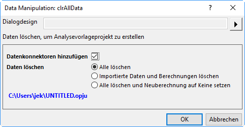
- Datenkonnektoren hinzufügen: Aktivieren Sie dieses Kontrollkästchen, um Datenkonnektoren aus dem geklonten Projekt in Ihr gespeichertes Projekt einzufügen. Jedes geklonte Arbeitsblatt ist mit dem ursprünglichen Arbeitsblatt in dem gespeicherten Projekt verbunden. Wenn Sie beabsichtigen, Daten aus andren ähnlichen Dateien in Ihr geklontes Projekt zu importieren, sollten Sie dieses Kontrollkästchen deaktivieren.
- Alle löschen: Es werden nur die importierten Daten gelöscht. Die Analyseoperationen werden im geklonten Projekt bewahrt.
- Importierte Daten und Berechnungen löschen: Die importierten Daten und Analyseoperationen werden gelöscht.
- Klicken Sie auf OK, um Ihr geklontes Projekt zu erstellen. Die ausgewählten Daten werden gelöscht und das geklonte Projekt wird unter dem Namen UNTITLED zum Arbeitsbereich hinzugefügt.
- Benennen und speichern Sie das geklonte Projekt. Wenn Sie soweit sind, weitere Datendateien zu verarbeiten, können Sie es öffnen und neue Daten importieren:
- Wenn Ihre Analyse- und Grafikoperationen mit einer bestimmten Reihe von Datendateien verknüpft sind, die regelmäßig aktualisiert werden, müssen Sie nicht unbedingt Konnektoren verwenden. Sie können einfach die Dateien neu importieren (Daten: Neu importieren oder Direkt neu importieren).
- Wenn Ihre Operationen mit Hilfe von Datenkonnektoren verknüpft sind, klicken Sie auf das Symbol der Konnektoren
 und wählen Sie im Popup-Menü Import (nur dieser Konnektor) oder Alle importieren (alle Konnektoren in der Mappe).
und wählen Sie im Popup-Menü Import (nur dieser Konnektor) oder Alle importieren (alle Konnektoren in der Mappe).
- Ein mögliches Szenarium wäre, dass Sie alle Ihre Daten in einer einzelnen Origin-Projektdatei speichern. Wenn Sie aus Ihrem geklonten Projekt Datenkonnektoren zu Ihrem ursprünglichen Projekt hinzugefügt haben, dann können Sie selektiv nur die Daten importieren, die Sie für Ihre Grafik- und Analyseoperationen brauchen. Wenn Sie fertig sind, können Sie die Datei unter einem neuen Namen speichern, wodurch Ihr geklontes Projekt zur Wiederverwendung verfügbar bleibt.
Stapelzeichnen
Stapelzeichnen Origin stellt mehrere Methoden zur Verfügung, um Diagramme aus mehreren Datensätzen oder Dateien per Stapelverarbeitung zu zeichnen. Die folgenden zwei Abschnitte umreißen, wie mehrere Diagramme aus (1) Daten, die sich bereits in Arbeitsblättern befinden, und (2) aus mehreren Datendateien erstellt werden. Zusätzlich zu diesen beiden Verfahrensweisen kann das Stapelzeichnen auch programmatisch mit Hilfe von LabTalk-Skript oder Origin C durchgeführt werden.
Diagramme mit Daten aus anderen Mappen/Blättern/Spalten duplizieren
Wenn Sie mehrere Arbeitsmappen, Arbeitsblätter oder Spalten mit ähnlicher Datenstruktur haben wie diejenigen, die zum Zeichnen des Diagramms verwendet wurden, können Sie Origin veranlassen, das Diagramm über Fenster: Duplizieren (Stapelzeichnen) mit neuen Daten zu kopieren. Es gibt zwei Fälle:
- Wenn Sie ein Diagramm mit einem einzelnen Datensatz gezeichnet und es benutzerdefiniert angepasst haben und dieses Diagramm mit anderen Daten in dem gleichen Arbeitsblatt "klonen" möchten: Wählen Sie Fenster: Duplizieren (Stapelzeichnen): Duplizieren mit neuen Spalten. Wählen Sie andere Daten (Spalten), die Sie zeichnen möchten. Jede Spalte wird als neues Diagramm gezeichnet.
- Wenn Sie ein Diagramm mit Daten aus einem Arbeitsblatt oder einer Arbeitsmappe gezeichnet und es benutzerdefiniert angepasst haben und dieses Diagramm mit einem anderen Arbeitsblatt oder einer anderen Arbeitsmappe mit ähnlicher Datenstruktur "klonen" möchten: Wählen Sie Fenster: Duplizieren (Stapelzeichnen): Duplizieren mit neuen Blättern/Mappen. Origin listet alle Arbeitsblätter bzw. Arbeitsmappen mit einer ähnlichen Datenstruktur auf. Wählen Sie das Arbeitsblatt bzw. die Arbeitsmappe, aus der Sie zeichnen möchten. Jedes Arbeitsblatt/jede Arbeitsmappe wird als ein neues Diagramm gezeichnet. Diagramme, mit neuen Daten "klonen"
Arbeitsmappe als Vorlage zum Verarbeiten mehrerer Dateien verwenden
Wenn Sie Diagramme mit vielen Datendateien zeichnen, aber nicht zuerst alle Datendateien in die Arbeitsmappe importieren möchten, können Sie eine Datei importieren, das/die gewünschte/n Diagramm/e basierend auf diesen Daten erstellen, dann das/die Diagramm/e zu Ihrer Arbeitsmappe hinzufügen und die Arbeitsmappe als Vorlage speichern. Mit Hilfe dieser Vorlage können Sie mehrere Dateien verarbeiten und eine Mappe für jede Datei und das entsprechende Diagramm erstellen.
|
Tutorial: Diagramme aus mehreren Datendateien erstellen
- Wählen Sie bei aktiver neuer Arbeitsmappe Daten: Datei importieren: Einzelnes ASCII und importieren Sie die Datei Sensor01.dat aus dem Unterordner Samples\Curve Fitting des Origin-Installationsverzeichnisses.
- Markieren Sie Spalte B und erstellen Sie ein Punkt-Liniendiagramm der Daten.
- Klicken Sie doppelt auf die X-Achse, um den Dialog Achsen zu öffnen. Stellen Sie sicher, dass die Registerkarte Skalierung aktiv ist. Wählen Sie sowohl Horizontal als auch Vertikal im linken Bedienfeld und setzen Sie Neuskalieren auf Auto. Klicken Sie auf OK. Dies stellt sicher, dass die Diagrammskalierung automatisch bei Datenänderung aktualisiert wird.
- Klicken Sie in der Arbeitsmappe mit der rechten Maustaste auf den Reiter des Arbeitsblatts und wählen Sie Diagramm als Blatt hinzufügen. Wählen Sie dann das oben erstellte Diagramm aus und klicken Sie auf Fertig. Es wird ein neues Blatt zu der Arbeitsmappe hinzugefügt, das ein eingebettetes Diagramm enthält.
- Wechseln Sie zum Datenblatt, klicken Sie doppelt auf den Reiter und benennen Sie das Blatt in Daten um.
- Wählen Sie Worksheet: Worksheet löschen, um die Daten in diesem Blatt zu löschen. Beachten sie, dass dieser Schritt optional ist. Durch das Löschen der Daten wird die Größe der Vorlage reduziert, die im nächsten Schritt gespeichert wird.
- Wählen Sie Datei: Fenster speichern unter, vergeben Sie einen Namen wie Sensordaten und Diagramm und klicken Sie auf Speichern.
- Jetzt können Sie diese Vorlage verwenden, um mehrere Dateien zu verarbeiten. Wählen Sie im Menü Datei: Stapelverarbeitung.
- In dem aufgerufenen Dialog setzen Sie den Modus Stapelverarbeitung auf Analysevorlage laden und navigieren dann im Feld Analysevorlage zu der von Ihnen gespeicherten Vorlage.
- Setzen Sie die Datenquelle auf Aus Dateien importieren und wählen Sie die drei Dateien Sensor01.dat, Sensor02.dat und Sensor03.dat aus dem Unterordner Samples\Curve Fitting.
- Legen Sie für Datenblatt die Option Daten fest und für Ergebnisblatt die Option Keine.
- Klicken Sie auf OK, um den Dialog zu schließen. Sie sollten drei Arbeitsmappen erhalten, bei denen die Daten in das erste Blatt importiert sind und sich die aktualisierten Diagramme im zweiten Blatt befinden. Um die Diagramme weiter zu bearbeiten, klicken Sie doppelt auf das Diagramm, um eine bearbeitbare Seite aufzurufen.
|
| Wenn die Verarbeitung Ihrer Daten benutzerdefinierte Importeinstellungen erfordert, werden diese Einstellungen standardmäßig im Datenblatt gespeichert. Auf diese Weise im Blatt gespeicherte Einstellungen werden für den Import verwendet, wenn eine Stapelverarbeitung mehrerer Dateien mit Hilfe der Arbeitsmappe als Vorlage durchgeführt wird. |
Stapelanalyse
Origin bietet mehrere Möglichkeiten, um die Stapelanalyse von mehreren Dateien, Datenspalten oder Datenzeichnungen durchzuführen.
Mehrere Datensätze in Dialogen analysieren
Einige Analysedialoge, zum Beispiel Lineare Anpassung und Nichtlinearer Fit, unterstützen die Analyse von mehreren Datensätzen. Berichtsblätter, die durch diese Dialoge erzeugt wurden, enthalten eine Zusammenfassungstabelle, die die Parameterwerte für jeden Datensatz und andere zugehörige Ergebnisse wie die Güte der Anpassungsindikatoren aufführt. Die Zusammenfassungstabelle kann in ein externes Blatt zur weiteren Verarbeitung kopiert werden.
|
Tutorial: Mehrere Datensätze anpassen
- Öffnen Sie eine neue Arbeitsmappe und importieren Sie die Datei Samples\Curve Fitting\Multiple Gaussians.dat aus dem Origin-Installationsverzeichnis.
- Legen Sie die Langnamen der vier Y-Spalten mit Peak 1, Peak 2, Peak 3 und Peak 4 fest.
- Markieren Sie alle vier Y-Spalten und wählen Sie Analyse: Anpassen: Nichtlinearer Fit, um den Dialog NLFit zu öffnen.
- Wählen Sie Gauss in der Auswahlliste Funktion, klicken Sie dann auf die Schaltfläche Fit, um die Anpassung durchzuführen und schließen Sie den Dialog.
- Wechseln Sie zum Berichtsblatt FitNL1. Es wird eine Tabelle mit dem Namen Zusammenfassung gezeigt, die die Fitparameter und die Fitstatistik für jeden Datensatz auflistet.
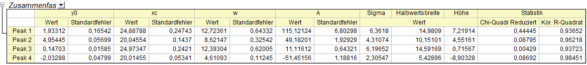 |
| Klicken Sie im Berichtsblatt des nichtlinearen Fits auf die Schaltfläche mit dem nach unten zeigenden Pfeil neben der Tabelle Zusammenfassung und wählen Sie Eine Kopie als neues Blatt erstellen. Eine Kopie der Tabelle wird erzeugt, in der alle Zellen mit dem Bericht verknüpft sind. Jegliche Aktualisierungen/Änderungen an der Anpassung aktualisieren automatisch die Werte in diesem kopierten Blatt. Dieses Blatt kann dann verwendet werden, um zu zeichnen oder eine sekundäre Analyse der Anpassungsparameter durchzuführen. |
| Beim Nummerieren von z. B. einem Spaltenlangnamen, wie Sie das in Schritt 2 oben getan haben, geben Sie die Zeichenkette in die erste Zelle ein (z. B. "Peak 1"), wählen Sie die Zelle und fahren Sie mit der Maus über die untere rechte Ecke. Wenn der Cursor ein "+" wird, ziehen Sie ihn über die anderen Zellen. Der Inhalt der ersten Zelle wird auf andere Zellen erweitert.
- 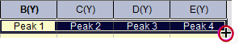
|
Minitools zum Analysieren von mehreren Kurven verwenden
MinitoolsRegion of Interest (ROI) Origin verfügt über mehrere Minitools für die Durchführung von interaktiven Analysen gezeichneter Daten. Minitools ermöglichen das Auswählen eines bestimmten Datenbereichs, das Wechseln zwischen Datensätzen und das Festlegen von verschiedenen Einstellungen, die sich auf die Ausführung der Analyse beziehen.
Die meisten Minitools bieten eine Option zum Durchführen der Analyse auf alle Datenzeichnungen in dem aktuellen Layer oder alle Datenzeichnungen auf der Diagrammseite. Daher können Sie eine sich wiederholende Analyse auf mehrere Datensätze mit den gleichen Einstellungen durchführen und eine Tabelle mit den Ergebnissen über alle Datensätze erzeugen.
|
Grafische Datenauswahl (ROI) Tutorial: Das Minitool Integration zum Integrieren von mehreren Kurven verwenden
- Öffnen Sie das Projekt "Samples\Spectroscopy\Absorbance Spectra.opj".
- Wählen Sie bei einem aktiven Diagrammfenster Minitools: Integration im Hauptmenü.
- Klicken Sie in dem sich öffnenden Dialog auf die Registerkarte Basislinie und setzen Sie die Auswahlliste Modus auf Gerade Linie.
- Klicken Sie auf die Registerkarte Ausgabe, erweitern Sie den Zweig Eigenschaften ausgeben in und aktivieren Sie An Worksheet anhängen. Klicken Sie auf OK, um den Dialog zu schließen.
- Ein sogenanntes ROI-Objekt (Region of Interest) wird in dem Diagramm platziert. Klicken Sie ggf. auf das ROI-Feld und verändern Sie die Größe dieses Objekts, um den gesamten Datenbereich, der in dem Diagramm gezeichnet wurde, abzudecken. Die integrierte Fläche wird als schattierter Bereich angezeigt.
- Klicken Sie auf die Schaltfläche mit dem Pfeil oben rechts im ROI-Objekt und wählen Sie dann Daten ändern im Kontextmenü, um zu einer anderen Zeichnung im Layer zu wechseln. Prüfen Sie, ob die aktuellen Einstellungen der Basislinie für andere Kurven im Layer geeignet sind.
- Klicken Sie auf die Pfeilschaltfläche , wählen Sie Neue Ausgabe für alle Kurven (N) oder drücken Sie direkt die N-Taste. Die Integration wird für alle Kurven durchgeführt.
- Klicken Sie erneut auf den Pfeil und wählen Sie Zum Berichtsblatt gehen. Erweitern Sie das Berichtsblatt, um die Integrationsergebnisse aller Kurven anzuzeigen.
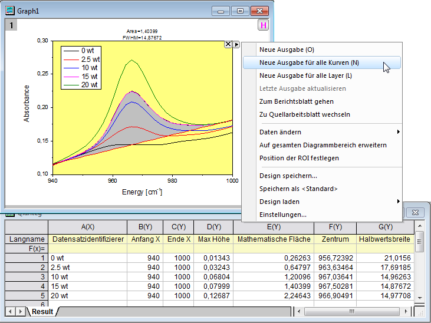 |
Stapelanalyse mit Analysevorlage
AnalysevorlagenVorlagen, AnalyseAnalyseberichteBerichte, Analyse Das Hilfsmittel Stapelverarbeitung ermöglicht Ihnen, mehrere Dateien oder Datensätze mit Hilfe einer Analysevorlage zu verarbeiten. Führen Sie einfach die Analyse für eine der Dateien durch, fassen Sie alle gewünschten Ergebnisse und Berichtsblätter in einer Arbeitsmappe zusammen und speichern Sie diese Arbeitsmappe als eine Analysevorlage. Das Hilfsmittel Stapelverarbeitung verwendet dann die Analysevorlage, um mehrere Dateien/Datensätze zu verarbeiten. Sie haben die Option, eine Arbeitsmappe für jede Datei/jeden Datensatz zu speichern und außerdem eine Zusammenfassungstabelle mit ausgewählten Analyseparametern und anderen Metadaten zu erstellen, die Sie in Ihrer Analysevorlage vorkonfiguriert haben.
|
Tutorial: Stapelanalyse von mehreren Dateien mit Hilfe einer Analysevorlage
- Wählen Sie im Menü Datei: Stapelverarbeitung. Der Dialog der Stapelverarbeitung wird geöffnet.
- Setzen Sie den Modus Stapelverarbeitung auf Analysevorlage laden.
- Klicken Sie auf die Schaltfläche Durchsuchen rechts vom Feld Analysevorlage und navigieren Sie zur Datei <Origin-Programmordner>\Samples\Batch Processing\Sensor Analysis.OGW. Diese Analysevorlage enthält mehrere Blätter für die lineare Regressionsanalyse, Berichtserstellung und Zusammenfassungstabellen.
- Setzen Sie die Datenquelle auf Aus Dateien importieren. Klicken Sie dann auf die Schaltfläche rechts von der Dateiliste und wählen Sie im Unterordner Samples\Curve Fitting die Dateien Sensor01.dat, Sensor02.dat und Sensor03.dat aus.
- Setzen Sie Datensatzidentifikator auf Dateiname, Datenblatt/-blätter auf Daten und Ergebnisblatt auf Ergebnis. Beachten Sie, dass dies die Namen der existierenden Blätter in der Analysevorlage sind.
- Zwischenmappen löschen deaktivieren
- Klicken Sie auf OK, um den Dialog zu schließen, und verarbeiten Sie die drei Dateien (Sie können auf die Frage mit "Nein" antworten). Sie erhalten drei Mappen mit Daten, Analyseergebnissen und Bericht für jede Datei und eine vierte Mappe, die die Zusammenfassungstabelle der Analyseergebnisse von allen Dateien enthält.
- 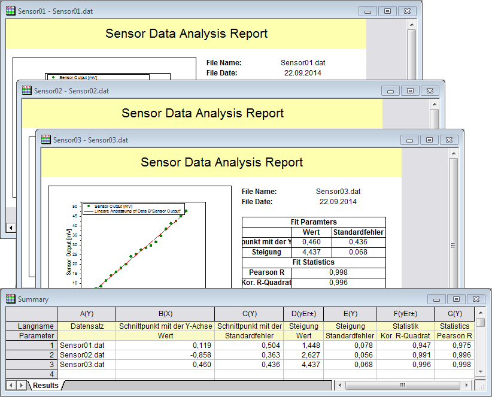
|
| Das Speichern der anfänglichen Arbeitsmappe als Analysevorlage ist optional. Sie können einfach das Origin-Projekt (.opj) speichern und beim nächsten Mal die Daten in Ihrer Arbeitsmappe ersetzen, um alle Ergebnisse und Diagramme zu aktualisieren. Das Hilfsmittel Stapelverarbeitung verfügt auch über eine Option zum wiederholten Importieren von Dateien in das aktive Fenster, so dass Sie eine vorhandene Mappe innerhalb eines Projekts (das alle gewünschten Analysen und Diagramme enthält) einfach wieder verwenden können als Vorlage für die Stapelanalyse. |
| Sie können Analyseberichte per Stapelverarbeitung mit Hilfe einer benutzerdefinierten MS Word-Vorlage erzeugen mit der Option, eine PDF- und/oder eine MS Word-Datei für jeden Bericht auszugeben. Außerdem können Sie die Berichte in einer einzelnen Datei kombinieren. Informationen zur Stapelverarbeitung mit Word-Vorlage zum Erzeugen von Berichten finden Sie in diesem Tutorial. |
Analyse für andere Datensätze oder Datenzeichnungen wiederholen
Bei einigen Analyseoperationen können Sie die Analyse für einen Datensatz oder eine Datenzeichnung durchführen und dann die Analyse für alle anderen Daten wiederholen. Diese Funktion ist über einen Kontextmenübefehl verfügbar, wenn Sie auf das mit der Operation verbundene Schloss klicken.
- Wenn Sie in Arbeitsblattspalten oder Berichten auf das Schloss klicken, wird der Menübefehl Dies für alle Y-Spalten wiederholen angezeigt. Durch Auswahl dieser Option wird die Analyse für alle anderen Y-Spalten in dem Quelldatenblatt wiederholt.
- Wenn Sie in einem Diagramm auf das Schloss klicken, wird der Menübefehl Dies für alle Zeichnungen wiederholen angezeigt. Durch Auswahl dieser Option wird die Analyse für alle anderen Datenzeichnungen auf der Diagrammseite durchgeführt, sogar wenn die Zeichnungen sich in verschiedenen Layern befinden.
Dies ist insbesondere für solche Analysedialoge nützlich wie z. B. zum Glätten oder Interpolation etc., die nur die Eingabe von einem Datensatz unterstützen. Solange die Daten in einem Arbeitsblatt enthalten oder in einem Diagramm gezeichnet sind, kann die Analyse für alle anderen Datensätze wiederholt werden.
 | Anwender sollten eine Änderung in Origin 2022b beachten: In älteren Versionen, wenn die ursprüngliche Analyseausgabe ein neues Blatt oder eine neue Mappe erstellte, erstellte die Funktion Dies für alle wiederholen ein neues Blatt oder eine neue Mappe für die restlichen Y-Spalten oder Zeichnungen. Anwender äußerten den Wunsch, die gesamte Ausgabe an ein einzelnes Blatt zu senden, unabhängig von der ursprünglichen Ausgabespezifikation. Wenn die Eingabespalten einen gemeinsamen X-Datensatz teilen, wird der X-Datensatz nur einmal in das Ausgabeblatt geschrieben. Um zum alten Verhalten zurückzukehren, setzen Sie @RAO = 0 (Standard ist 1).
|
|
Tutorial: Mehrere Spalten in einem Arbeitsblatt glätten
- Importieren Sie die Datei \Samples\Curve Fitting\Multiple Gaussians.dat in eine leere Arbeitsmappe.
- Markieren Sie Spalte B und wählen Sie im Menü Analyse: Signalverarbeitung: Glätten, um den Dialog smooth zu öffnen.
- Übernehmen Sie die Standardeinstellungen und klicken Sie auf OK, um die Glättung durchzuführen. Es wird eine neue Spalte mit den geglätteten Daten hinzugefügt.
- Klicken Sie auf das Schloss in der Ausgabespalte und wählen Sie Dies für alle Y-Spalten wiederholen. Drei weitere Spalten der geglätteten Daten mit den gleichen Einstellungen werden aus den Daten in den Spalten C bis E erzeugt.
|
Diese Operation duplizieren
Die Ausgabe, die durch Origins Analyseoperationen erzeugt wird, wird mit ihren Quelldaten durch eine besondere Analyse und eine besondere Reihe von Analyseparametern verknüpft. Diese Verknüpfung wird durch das Platzieren eines "Operationsschlosses" auf der Analyseausgabe gekennzeichnet und -- es sei denn, der Anwender schaltet die Neuberechnung für eine bestimmte Operation aus -- diese Ergebnisse werden generell für die Bearbeitung "gesperrt". Sie können weitere Informationen darüber unter Analyseberichtsblätter und Neuberechnung in den einführenden Abschnitten dieses Kapitels finden.
Das Schlosssymbol auf der Analyseausgabe kann angeklickt werden, um ein Menü zu öffnen, das Ihnen postanalytischen Zugriff auf die Operationsparameter und weitere Informationen gewährt. Dies umfasst den Dialog und den Parametersatz, die zum Erzeugen der Analyseausgabe verwendet wurde. Es wird durch Klicken auf Parameter ändern geöffnet.
Am Ende dieses Menüs sehen Sie den Eintrag Diese Operation duplizieren.
- 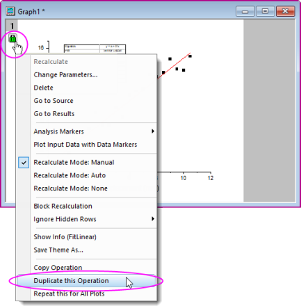
Eine mögliche Verwendung der Funktion ist folgende:
- Die Anwenderin führt eine Analyseoperation für eine Datenzeichnung durch, beispielsweise eine Anpassungsoperation mittels der nichtlineare Kurvenanpassung (NLFit).
- Die Anwenderin ist nicht sicher, welche Anpassungsfunktion die Daten am besten modelliert, also versucht sie eine Anpassung mit Hilfe einer potenziellen Funktion.
- Sie klickt auf das sich ergebende Operationsschloss und wählt Diese Operation duplizieren.
- Eine Duplikatsanalyse wird ausgeführt und ein zweites Operationsschloss wird zum Diagrammfenster hinzugefügt.
- Die Anwenderin klickt auf das zweite Operationsschloss, wählt Parameter ändern und, wenn der Dialog NLFit geöffnet ist, wählt ihre alternative Anpassungsfunktion und führt eine neue Anpassungsoperation durch. Die neue Anpassungsoperation ergibt eine neue Ausgabe, die jetzt mit der Ausgabe verglichen werden kann, die von einer Anpassung mit der ersten Anpassungsfunktion erzeugt wurde.

Analyse mit Hilfe von Datenfiltern wiederholen
Datenfilter für wiederkehrende AufgabenWiederkehrende Aufgaben, Filter für
Große Datensätze mit mehreren Spalten können schnell reduziert werden, indem Filterbedingungen auf eine oder mehrere Spalten angewendet werden. Diese Datenfilterfunktion kann auch zusammen mit der X-Funktion zum Kopieren von Spalten (colcopy) verwendet werden, um mehrere Diagramme aus den gleichen Quelldaten mit Hilfe unterschiedlicher Filterbedingungen zu erzeugen. Die gefilterten Daten können auch analysiert werden, so dass Sie die Diagramme und Analyseergebnisse der verschiedenen Filterbedingungen vergleichen können.
Ausgewählte Spalten des Quelldatenblatts können kopiert werden, um Unterblätter zu erzeugen, in denen die Filterbedingung mit dem Hauptblatt synchronisiert bleibt bzw. für das Unterblatt blockiert wird. Wenn das Quelldatenblatt aktualisiert wird, werden alle Unterblätter, zugehörigen Diagramme und Analyseergebnisse automatisch mit Hilfe ihrer jeweiligen Filterbedingungen aktualisiert. Zusätzlich kann die Filterbedingung eines bestimmten Unterblattes jederzeit wieder auf das Hauptblatt angewendet werden.
Das Bild unten zeigt die Quellarbeitsmappe mit Daten von mehreren Autoherstellern. Zwei Mappen wurden aus einem Teildatensatz und einem Datenfilter erstellt, um die Daten auf einen bestimmten Autohersteller zu beschränken. Es wurde eine lineare Regressionsanalyse der gefilterten Daten durchgeführt, so dass Sie die Ergebnisse der zwei Filter miteinander vergleichen können.
- 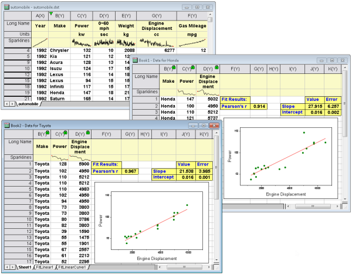
|
Tutorial: Eine Filterbedingung für kopierte Spalten blockieren
- Importieren Sie die Datei \Samples\Statistics\automobile.dat
- Klicken Sie auf die Spalte Make und dann auf die Schaltfläche Datenfilter hinzufügen/entfernen
 auf der Symbolleiste Worksheet-Daten. auf der Symbolleiste Worksheet-Daten.
- Klicken Sie auf das Filtersymbol , das zu der Spalte hinzugefügt wurde, und deaktivieren Sie alle Hersteller außer Honda (Hinweis: Deaktivieren Sie das Häkchen neben Alle auswählen, aktivieren Sie dann Honda und klicken Sie auf OK).
- Halten Sie die Strg-Taste gedrückt und markieren Sie die Spalten Make, Power und Engine Displacement. Klicken Sie als Nächstes mit der rechten Maustaste und wählen Sie im Kontextmenü Spalte kopieren in.
- Erweitern Sie im aufgerufenen Dialog Beschriftungen kopieren und setzen Sie ein Häkchen neben Langname und Einheiten. Klicken Sie dann auf OK. Es wird ein neues Arbeitsblatt zur Arbeitsmappe hinzugefügt. Dies enthält nur die Daten von Honda für Power und Engine Displacement.
- Klicken Sie auf den Reiter des neuen Arbeitsblatts und halten Sie die Maustaste gedrückt. Ziehen Sie es auf eine leere Stelle des Arbeitsbereichs, um eine separate Arbeitsmappe zu erstellen.
- Klicken Sie auf eines der Schlösser in den Spalten dieses kopierten Blattes und wählen Sie Arbeitsblattfilter: Blockieren. Die Filterbedingungen werden für dieses Blatt blockiert. Wenn Sie die Filterbedingung in dem ursprünglichen Datenblatt ändern, ist dieses kopierte Blatt nicht betroffen.
- Sie können jetzt zur ursprünglichen Mappe automobile zurückkehren, auf das Filtersymbol klicken und die Filterbedingung auf Toyota setzen. Verwenden Sie Spalten kopieren in, um ein weiteres Arbeitsblatt zu erstellen.
- Markieren Sie Spalte B in Ihrer Arbeitsmappe Honda, klicken Sie mit der rechten Maustaste auf sie und wählen Sie Setzen als: X. Tun Sie dasselbe für die Mappe Toyota.
- Markieren Sie Spalte C in Ihrer Arbeitsmappe Honda und klicken Sie auf die Schaltfläche Punktdiagramm auf der Symbolleiste 2D-Grafiken. Tun Sie dasselbe für die Mappe Toyota. Dadurch erhalten Sie zwei Zeichnungen von Power vs Engine Displacement, eine für Honda, eine für Toyota.
- Klicken Sie auf die Zeichnung für Honda und wählen Sie Analyse: Anpassen: Linearer Fit. Übernehmen Sie die Standardeinstellungen des Dialogs und klicken Sie auf OK. Tun Sie dasselbe für die Zeichnung von Toyota. Es wird eine lineare Anpassung für beide Datensätze durchgeführt und für beide jeweils ein Analyseberichtsblatt erstellt.
- Vergleichen Sie die Anpassungsergebnisse für die zwei Automobilhersteller.
|
| Wenn sich ein Datenfilter auf einer Spalte befindet, die für eine Analyseoperation eingegeben wird, werden die gefilterten Daten (verborgene Zeilen) standardmäßig in der Analyse ignoriert. Um verborgene Zeilen einzuschließen, klicken Sie auf das Symbol eines Analyseschlosses und setzen Sie Verborgene Zeilen ignorieren = Nein.
- 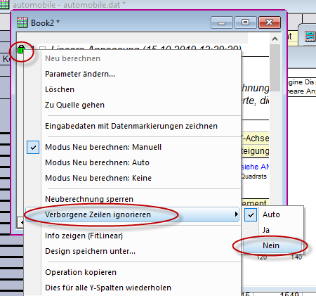
|
Aufgaben mit Hilfe von Programmierung automatisieren
In Origin programmieren
Zusätzlich zu den oben erwähnten Methoden zum Automatisieren von Aufgaben Automatisieren von Origin mit Hilfe der Benutzeroberfläche, können Sie auch programmatisch auf Funktionen der grafischen Darstellung und Analyse zugreifen, entweder über die Programmiersprache LabTalk, über Origin C oder über Python (intern oder extern). Der Zugriff auf Diagrammdesigns und -vorlagen und Analysevorlagen kann programmiert werden. Sie können einige dieser Verfahren manuell einrichten, indem Sie zuerst die Vorlagen (Diagrammvorlagen, Analysevorlagen™ etc.) mit Hilfe der grafischen Benutzeroberfläche erstellen und dann Ihren Code schreiben, mit dem die entsprechenden Vorlagen nach Bedarf aufgerufen werden.
Das Kapitel zum Programmieren in diesem Handbuch verhilft Ihnen zu einem Überblick über die in Origin verfügbaren Programmierungsoptionen. Links zu tiefer gehenden Informationen zum Thema Programmierung finden sich ebenfalls in diesem Kapitel.
Weiterführende Themen